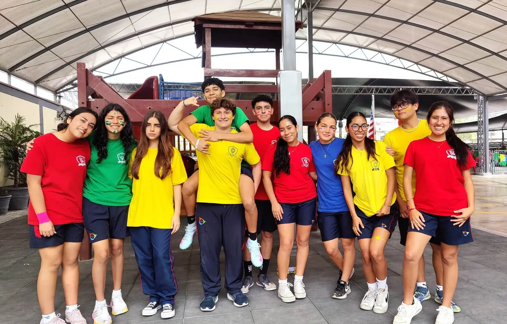
High School
7.º grado – 11.º grado
Del primer al quinto grado de secundaria.
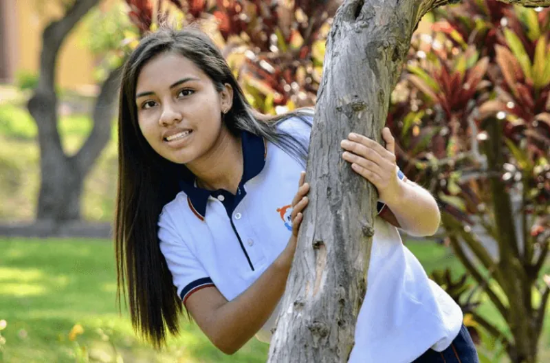
Educación bilingüe
Monterrico Christian School ofrece un servicio educativo bilingüe y de calidad a estudiantes desde inicial de tres años hasta el quinto grado de secundaria. La formación académica va de la mano con la enseñanza de valores cristianos.
El colegio adopta el Programa de Inmersión (Immersion English Program) en los niveles de inicial y primaria, y es bilingüe en el nivel de secundaria.
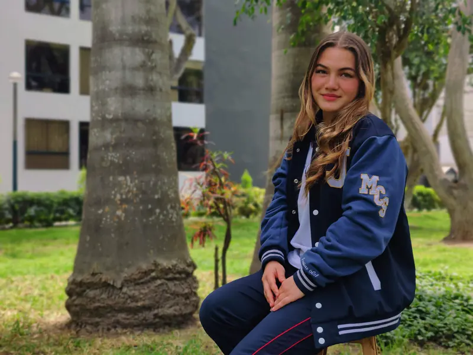
Excelencia académica
Estamos comprometidos en proveer el mejor ambiente, recursos, calidad profesional y de enseñanza para que nuestros estudiantes alcancen su mayor potencial, utilizando los conocimientos adquiridos así como sus dones y talentos, formamos estudiantes con altos estándares académicos.
En MCS preparamos a los estudiantes para que vivan con propósito, sirvan con corazón y se conviertan en líderes que impacten positivamente en la sociedad.
Proyectos de emprendimiento
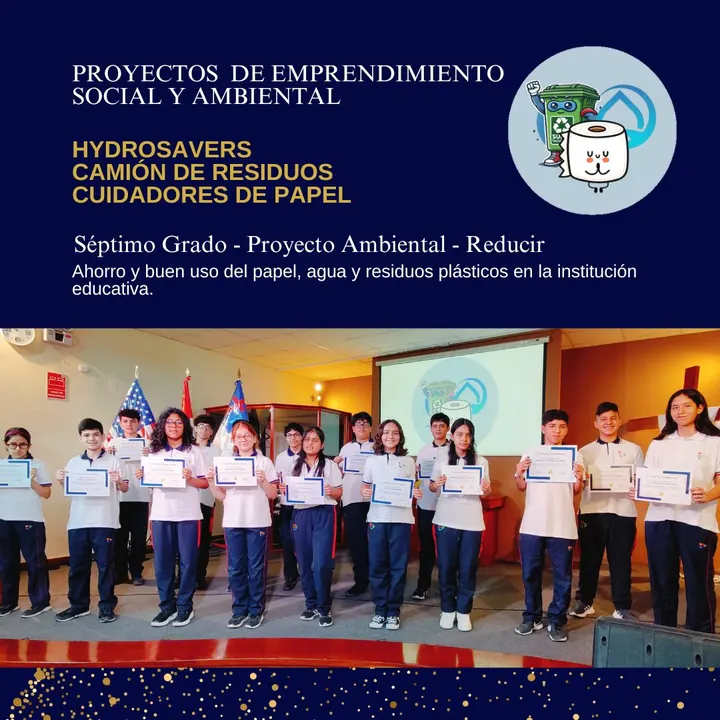
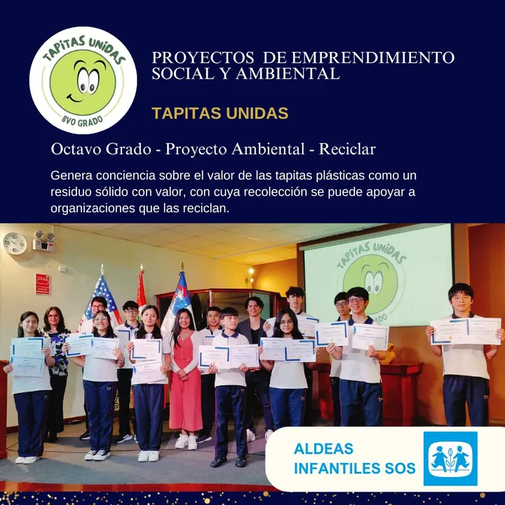
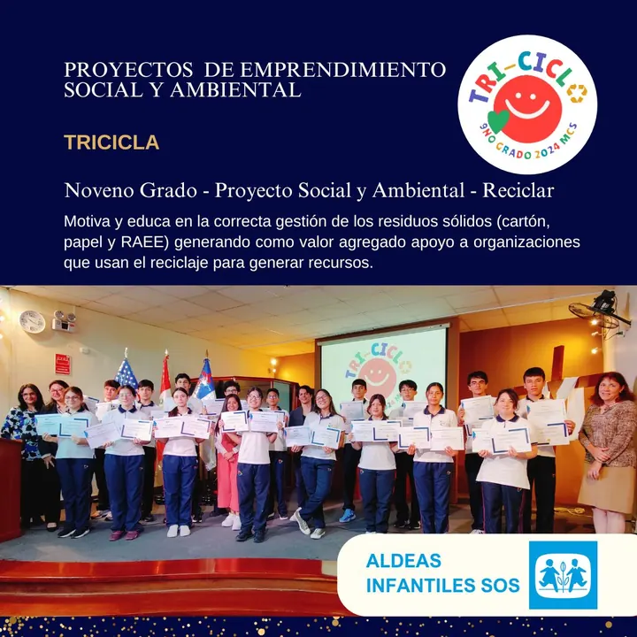
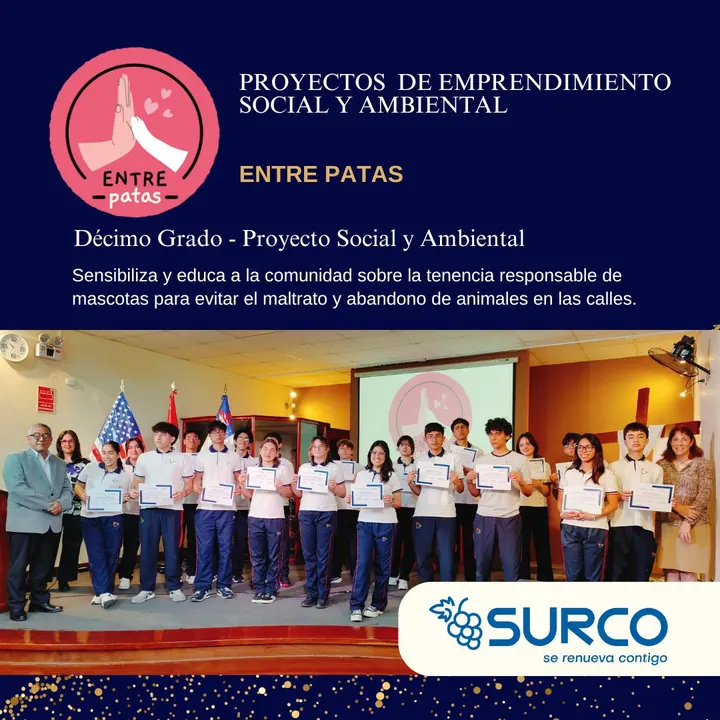
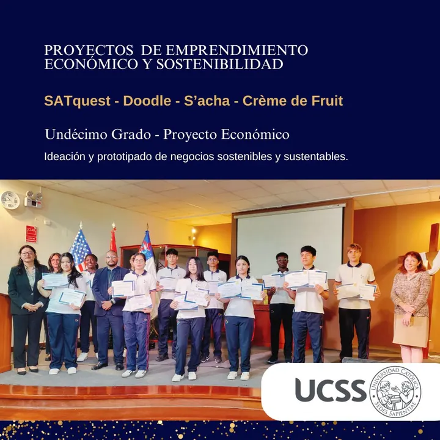
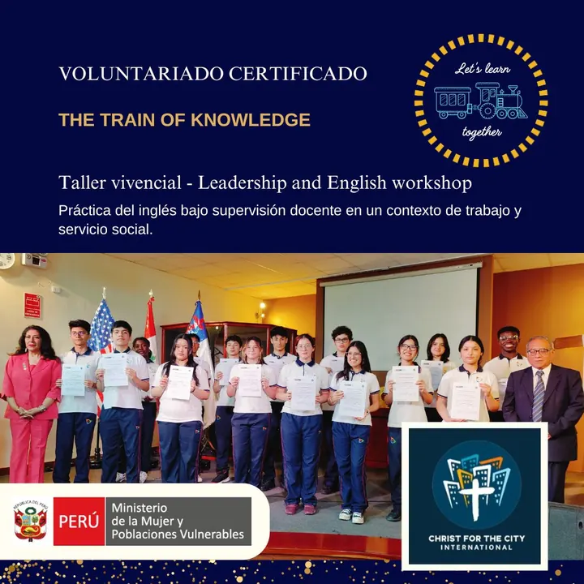

Vacantes 2026
Según la última actualización del colegio (11 de junio de 2026), estas son las vacantes del año escolar 2026 en High School:
- Séptimo grado: 10
- Octavo grado: no hay vacante disponible
- Noveno grado: 8
- Décimo grado: 14
- Undécimo grado: 2
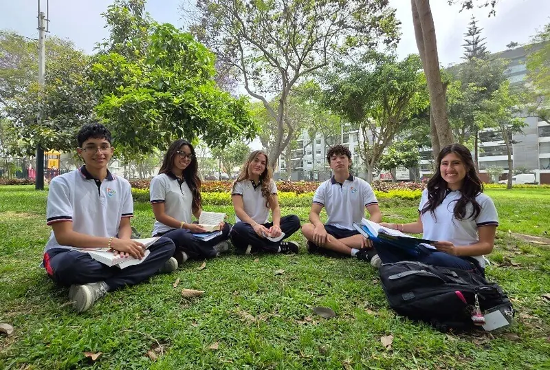
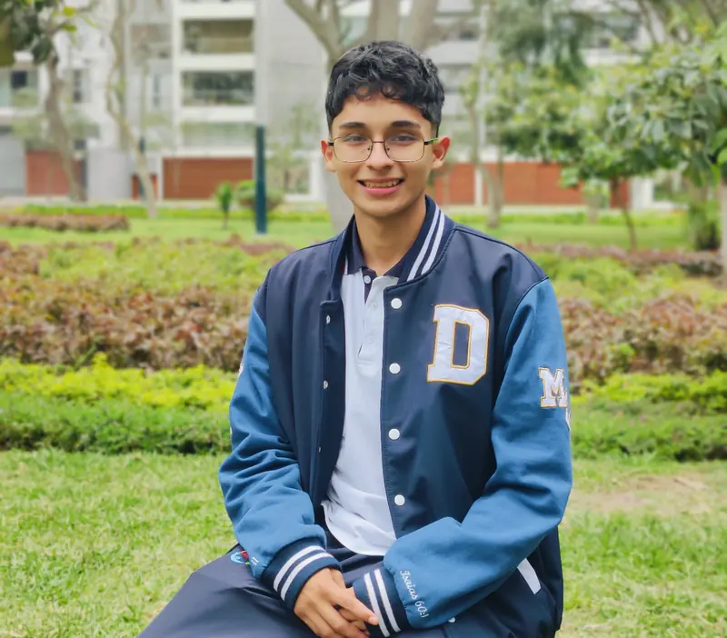